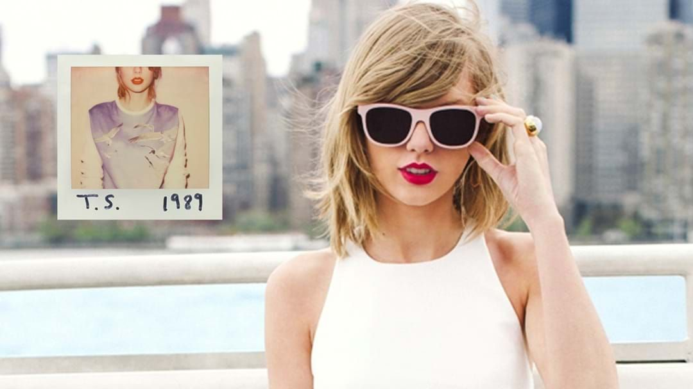

<html>

<head>
<title> MY FIRST WEB PAGE </title>
</head>


<body bgcolor=beige

</body>
</html>

<center> <h1> <font color=black size=20 face="Times New Roman">LIFE AND CAREER OF TAYLOR SWIFT </h1> <center>


<body>

    <header>
        <h1><font color=black size=7  face="Times New Roman"> Early Life</h1>

<center> 

        <center> <p align=justified> <font color=black size=5 face="arial"> Taylor Alison Swift is a singer-songwriter born on December 13, 1989, in West Reading, Pennsylvania. Her father, Scott Swift, is a stockbroker; her mother, Andrea Swift, is a homemaker who previously worked as a fund marketing executive; and her brother, Austin, is an actor. Swift spent her early years on a Christmas tree farm with her parents.</font> </center> </p>

	<center> <p align=justified> <font color=black size=5 face="arial"> When the rising star was around 12 years old, a computer repairman named Ronnie Cremer taught her to play guitar and helped with her first efforts as a songwriter, leading Taylor to write "Lucky You", her first song ever.</font> </center> </p>

	<center> <p align=justified> <font color=black size=5 face="arial"> To help Taylor's break into country music, her father transferred his job to an office in Nashville when she was 14, and the family relocated to a lakefront house in Hendersonville, Tennessee, where Taylor attended high school. Two years later, she transferred to Aaron Academy to better accommodate her touring schedule through homeschooling. She graduated high school a year early because of that.</font> </center> </p>
<br>

<header>
        <h1><font color=black size=7  face="Times New Roman"> Career Beginnings</h1>

<center> 

	<center> <p align=justified> <font color=black size=5 face="arial"> In Nashville, Taylor started working with songwriter Liz Rose during two-hour writing sessions every Tuesday afternoon after school. Later, she became the youngest artist signed by Sony/ATV publishing house, but left the group at age 14. She believed she was running out of time because she wanted to capture the early years of her life on an album while it still represented what she was going through. </font> </center> </p>

	<center> <p align=justified> <font color=black size=5 face="arial"> Taylor then started working on her debut album and persuaded Big Machine to hire Nathan Chapman to produce her songs. Her first lead single “Tim McGraw” was released in June 2006, and Taylor Swift’s self titled album was released later that year, on October 24, 2006. It peaked at number 5 on the US Billboard 200, where it spent 275 weeks. Swift was also the opening act for Brad Paisley’s 2007 tour to promote her album and spent 2006 and 2007 doing promotion on radios, television, and being the opening act for country artists in the US. Throughout 2007 and 2008, Taylor released four more singles from her debut album and all of them appeared on Billboard's Hot Country Songs chart. </font> </center> </p>

	<center> <p align=justified> <font color=black size=5 face="arial"> Swift released her first two EPs "The Taylor Swift Holiday Collection" and "Beautiful Eyes" in October 2007 and July 2008, respectively, winning accolades for all of her first three projects. </font> </center> </p>

	<center> <p align=justified> <font color=black size=5 face="arial"> She became the youngest person to be honored with the BMI Songwriter of the Year title in 2007. She won awards at the CMAs, ACMs and AMAs while also securing a nomination for Best New Artist at the 50th Grammy Awards. </font> </center> </p>

<header>
        <h1><font color=black size=7  face="Times New Roman"> Fearless</h1>

<center> 

	<center> <p align=justified> <font color=black size=5 face="arial"> Swift's sophomore album, Fearless, was released on November 11, 2008. Five singles were released throughout 2008 and 2009, with "Love Story", the lead single, peaking at number 4 on the Billboard Hot 100  chart and number 1 in Australia. The second single, "You Belong With Me", peaked at number 2 in the US. The album debuted at number one on the Billboard 200 and was the top selling album of 2009 in the US. </font> </center> </p>

	<center> <p align=justified> <font color=black size=5 face="arial"> The Fearless Tour – Swift's first headlining concert tour – grossed over $63 million, with Taylor releasing a documentary of the tour that was aired on television and released on DVD. Throughout 2009 and 2010, Swift won multiple awards with her LP at prestigious award shows such as the CMAs and the ACMs, including Artist of the Year at the AMAs and her first Album of the Year statue at the 52nd Grammys, where Swift also bagged another 3 wins. She was named 'Female Artist of the Year' by Billboard back in 2009 as well. </font> </center> </p>


	<center> <p align=justified> <font color=black size=5 face="arial"> Taylor also co-wrote songs with artists such as John Mayer, Boys Like Girls, and Kellie Pickler, and wrote 2 tracks for Disney Channel’s Hannah Montana – "Crazier" and "You'll Always Find Your Way Back Home" – which were featured on the movie’s soundtrack.</font> </center> </p>

	<center> <p align=justified> <font color=black size=5 face="arial"> During Fearless era, Taylor also wrote “Today Was A Fairytale” for the Valentine's Day movie Soundtrack, which peaked at number 2 in the US.</font> </center> </p>

<header>
        <h1><font color=black size=7  face="Times New Roman"> Speak Now</h1>

<center> 

	<center> <p align=justified> <font color=black size=5 face="arial"> In August 2010, Swift released "Mine”, the lead single from her third studio album, Speak Now. It debuted on the US Billboard Hot 100 chart at number three. Following criticism claiming Taylor’s songwriting was good because she worked with co-writers, Swift wrote all 17 tracks on her third record by herself as well as co-produced every song.</font> </center> </p>

	<center> <p align=justified> <font color=black size=5 face="arial"> The album was released on October 25, 2010, debuting at number 1 on Billboard 200, with 1 million copies sold in its first week. 
   At the 54th Grammy Awards, in 2012, Swift won Best Country Song and Best Country Solo Performance for "Mean", which she performed during the ceremony in response to her much criticized 2010 Grammy performance, serving as a testament to her abilities as a musician.</font> </center> </p>


	<center> <p align=justified> <font color=black size=5 face="arial"> Swift won several awards for Speak Now, including Songwriter of the Year at the BMI Awards, Entertainer of the Year at the ACMs and CMAs, and was named Billboard’s Woman of the Year. The album also received general acclaim from critics, with Rolling Stone praising Taylor abilities as a rockstar. 
   The Speak Now World Tour was done between 2011 and 2012, grossing over $123 million. In November 2011, she released a live album, the “Speak Now World Tour Live". </font> </center> </p>

	<center> <p align=justified> <font color=black size=5 face="arial"> Swift also contributed to The Hunger Games soundtrack with two original songs: “Eyes Open” and “Safe & Sound”, recorded with The Civil Wars. The latter went on to win a Grammy award as well as a Golden Globe nomination. Taylor was featured on BoB's single "Both of Us”, released in May 2012. </font> </center> </p>

<header>
        <h1><font color=black size=7  face="Times New Roman"> Red</h1>

<center> 

	<center> <p align=justified> <font color=black size=5 face="arial"> In August 2012, Swift released "We Are Never Ever Getting Back Together", the lead single from her fourth studio album, RED. It became her first number one in the US and New Zealand, and reached the top spot on iTunes digital song sales chart only 50 minutes after its release. Her third single, "I Knew You Were Trouble”, peaked in the top 5 of the most important music market countries in the world, reaching the 2nd position on Billboard Hot 100. 
   Red earned Swift several accolades, including 4 Grammy nominations, a VMA trophy, multiple AMA statues and a BMI award for Songwriter of the Year. Taylor was also honored by the Country Music Academy with the Pinnacle Award. 
   In 2013, Taylor recorded "Sweeter than Fiction" for the One Chance movie soundtrack. It became her first project with producer Jack Antonoff, who she would continue to work with in the future. Taylor also collaborated with Tim McGraw and Keith Urban in one of the most successful country songs of that year, “Highway Don’t Care”.
 
   RED debuted at number 1 in the US, with a first week sale of 1.2 million copies, and was Swift's first number 1 album in the UK. The Red Tour ran from March 2013 to June 2014 and grossed over $150 million, becoming the highest grossing country tour when it wrapped.  </font> </center> </p>

	<center> <p align=justified> <font color=black size=5 face="arial"> Red earned Swift several accolades, including 4 Grammy nominations, a VMA trophy, multiple AMA statues and a BMI award for Songwriter of the Year. Taylor was also honored by the Country Music Academy with the Pinnacle Award. 
   In 2013, Taylor recorded "Sweeter than Fiction" for the One Chance movie soundtrack. It became her first project with producer Jack Antonoff, who she would continue to work with in the future. Taylor also collaborated with Tim McGraw and Keith Urban in one of the most successful country songs of that year, “Highway Don’t Care”.
  </font> </center> </p>

<header>
        <h1><font color=black size=7  face="Times New Roman"> 1989</h1>

<center> 

	<center> <p align=justified> <font color=black size=5 face="arial"> In March of 2014, Taylor moved to New York City while she worked on her fifth studio album, 1989, which would become her most successful and longest-charting record. Influenced by 1980s synth-pop, Swift severed ties with the country sound of her previous albums, and marketed 1989 as her "first documented, official pop album". The album was released on October 27, 2014 and sold 1.28 million copies in the US during the first week of release, debuting at the top of Billboard 200 chart. 
  </font> </center> </p>

	<center> <p align=justified> <font color=black size=5 face="arial"> Three of its singles – “Shake It Off", "Blank Space", and "Bad Blood”, featuring rapper Kendrick Lamar – reached number one in Australia, Canada, and in the US. 
   The 1989 World Tour ran from May to December 2015 and was the highest-grossing tour of the year, with $250 million in total revenue.  
  </font> </center> </p>

	<center> <p align=justified> <font color=black size=5 face="arial"> During this era, Taylor went up against two of the biggest steaming services in the world, Spotify and Apple Music, in an effort to oppose the way these companies payed artists. In November 2014, Swift removed her entire catalog from Spotify, arguing that the streaming company’s ad-supported free service undermined the premium service, which provides higher royalties for songwriters. In June of 2015, Taylor wrote an open letter criticizing Apple Music for not offering royalties to artists during the streaming service's three-month free trial period. The following day, Apple announced that it would pay artists during the free trial period. 
  </font> </center> </p>

	<center> <p align=justified> <font color=black size=5 face="arial"> Swift was named Billboard's Woman of the Year in 2014, and at the 2014 American Music Awards, she received the inaugural Dick Clark Award for Excellence. During this era, Swift also won a BRIT, several VMAs, and multiple other accolades which solidified the 1989 era as the most awarded pop era of all time. 
   At the 58th Grammy Awards in 2016, 1989 won in 3 categories, including Album of the Year. Swift became the first woman and fifth act overall to win Album of the Year twice as a lead artist. 
  </font> </center> </p>

	<center> <p align=justified> <font color=black size=5 face="arial"> Swift co-wrote "This Is What You Came For" with Calvin Harris in 2016, and early in 2017, she collaborated with Zayn Malik on “I Don’t Wanna Live Forever”, for the Fifty Shades Darker soundtrack. The song reached number two in the US and won Best Collaboration at the 2017 MTV Video Music Awards.
   "Better Man”, a song Taylor had written during Red era, was released on Little Big Town's seventh album, The Breaker, and earned Swift an award for Song of the Year at the 51st CMA Awards in 2017.
  </font> </center> </p>

<header>
        <h1><font color=black size=7  face="Times New Roman"> Reputation</h1>

<center> 

	<center> <p align=justified> <font color=black size=5 face="arial"> After disappearing from social media and the public eye during most of 2016, Swift executed one of the most successful comebacks in history with her sixth studio album, reputation. “Look What You Made Me Do” was released as the albums’s lead single and its music video broke the record for the most views in the first 24 hours of release.
  </font> </center> </p>

	<center> <p align=justified> <font color=black size=5 face="arial"> The album was released on November 10, 2017 and incorporated a heavy electropop sound, with hip hop, R&B and EDM influences. It debuted at #1 on the Billboard 200, with first-week sales of 1.21 million copies. With this achievement, Swift became the first act to have four albums sell one million copies within one week in the US. The project spawned three other international singles, including the US top-five entry "...Ready for It?".
  </font> </center> </p>

	<center> <p align=justified> <font color=black size=5 face="arial"> In support of reputation, she embarked on her reputation Stadium Tour, which ran from May to November 2018. In the US, the tour grossed $266.1 million in box office and sold over two million tickets, breaking Swift's own record for the highest-grossing US tour by a woman, which was previously held by her 1989 World Tour ($181.5 million). It also became the highest-grossing North American concert tour in history. Worldwide, the tour grossed $345.7 million. On December 31st, Swift released the reputation Stadium Tour concert film on Netflix. 
  </font> </center> </p>

	<center> <p align=justified> <font color=black size=5 face="arial"> Reputation was nominated for Best Pop Vocal Album at the 61st Grammy Awards in 2019. At the 2018 AMAs, Swift won four awards, including Artist of the Year and Favorite Pop/Rock Female Artist. After the 2018 ceremony, Swift garnered a total of 23 awards, becoming the most awarded female musician in AMA history.</font> </center> </p>

<header>
        <h1><font color=black size=7  face="Times New Roman"> Lover</h1>

<center> 

	<center> <p align=justified> <font color=black size=5 face="arial"> In November 2018, Taylor signed a new multi-album deal with Universal Music Group and her subsequent releases would be promoted under the Republic Records imprint. The contract included a provision for her to maintain ownership of her masters recordings. Her seventh album would become the first studio album owned by Swift.</font> </center> </p>

	<center> <p align=justified> <font color=black size=5 face="arial"> Lover was released on August 23, 2019 and became Taylor’s sixth consecutive album to sell over 500,000 copies in its first week in the US, making Swift the first female artist to achieve this. All 18 songs from the album charted on the Billboard Hot 100 in the same week, setting a record for the most simultaneous entries by a woman. Lover was the world's best-selling solo studio album of 2019, selling 3.2 million copies.</font> </center> </p>


	<center> <p align=justified> <font color=black size=5 face="arial"> The album earned multiple accolades, including 3 nominations at the Grammys, 3 VMAs and 6 AMAs. Swift also became the first female artist to win Artist of the Decade at the American Music Awards.
   Taylor starred as Bombalurina in the movie adaptation of Andrew Lloyd Webber's musical, Cats. She co-wrote and recorded an original song for the movie called "Beautiful Ghosts”, which would earn her another Golden Globe nod & a Grammy nomination at the 63rd Annual GRAMMY Awards.</font> </center> </p>

	<center> <p align=justified> <font color=black size=5 face="arial"> The documentary 'Miss Americana', which chronicles part of her life and career over the years, premiered at the 2020 Sundance Film Festival and was released on Netflix in January 2020. Miss Americana features the original song "Only the Young", which Swift wrote after the 2018 United States presidential elections. </font> </center> </p>

	<center> <p align=justified> <font color=black size=5 face="arial"> During promotion for Lover in 2019, Swift became embroiled in a publicized dispute with manager Scooter Braun and her former label Big Machine regarding the acquisition of the masters of her back catalog. She stated she had been trying to buy the masters for years, but Big Machine only allowed her to do so if she exchanged a new album for an older one under another contract, which she chose not to sign. In October 2019, Swift's masters, videos and artworks were sold to Shamrock Holdings for a reported $300 million. Swift began re-recording her back catalog in November 2020 in an effort to own and be in control of her music and life’s work. </font> </center> </p>

<header>
        <h1><font color=black size=7  face="Times New Roman"> folklore, evermore and re-recordings</h1>

<center> 

	<center> <p align=justified> <font color=black size=5 face="arial"> On July 23, 2020, Swift surprise-announced she would be releasing her eighth studio album, folklore, at midnight. The album debuted at #1 on the Billboard 200 and became the year's longest-running no. 1, with 8 non-consecutive weeks at the top of the chart. The album’s lead single “cardigan” also debuted at #1.  </font> </center> </p>

	<center> <p align=justified> <font color=black size=5 face="arial"> Made in isolation during the COVID-19 pandemic, folklore was the result of a collaboration with long-time musical partner Jack Antonoff, Aaron Dessner, from The National, with whom Taylor had never worked before, and Bon Iver who are featured in one of the album’s tracks.
   In November 2020, Swift released the self-directed “folklore: the long pond studio sessions” on Disney+, a documentary in which Taylor, Aaron and Jack perform all the songs from the record while discussing the meanings and inspirations behind the album. </font> </center> </p>

	<center> <p align=justified> <font color=black size=5 face="arial"> Folklore earned Swift 5 nominations at the Grammys, including Album and Song of the Year. Taylor won the Album of the Year statue, becoming the first woman to win the Grammy’s highest honor three times.
   On December 10, 2020, Swift once again surprised her fans with the announcement of her ninth studio album and folklore’s sister record, evermore. The album was released on the 11th and continued Taylor’s collaborations with Aaron Dessner, Jack Antonoff and Bon Iver, as well as incorporated new artists into the “folkmore universe”, such as HAIM and The National. Both evermore and its lead single “willow” debuted atop of the Hot 100 and Billboard 200 charts. Having both sister albums achieve this feature, Swift became the first artist to debut at the top of both the singles and albums charts simultaneously twice. </font> </center> </p>

	<center> <p align=justified> <font color=black size=5 face="arial"> Folklore and Evermore embrace an indie folk and alternative rock production, a departure from Swift’s previous upbeat pop releases. Both albums sold over one million units worldwide in its first week and folklore broke the record for first-day album streams by a female artist on Spotify. 
   Taylor began working on the re-recordings of her first 6 studio albums in November of last year. The first release from this effort to own her catalog was the re-recording of her sophomore album Fearless, now Fearless (Taylor’s Version). It was released on April 9, 2021 and included 6 never before heard songs that didn’t make it into the album originally, besides the 20 tracks that had already been released in 2008 and 2009. Fearless (Taylor’s Version) debuted at #1 on the Billboard Hot 200, becoming Swift’s 9th consecutive album and the first re-recorded album in history to do so. </font> </center> </p>

	<center> <p align=justified> <font color=black size=5 face="arial"> Taylor released Red – Taylor's Version' was released in November 2021 and 1989 – Taylor's Version' released on 27th October 2023.</font> </center> </p>


<p align=justified> <font color=black size=3 face="arial"> Copyright Disclaimer: I do not claim to own the copyrights to the material used in this website/content. The material is used for informational purposes only and is attributed to the original creators whenever possible. If you are the copyright holder to any of the material used and do not wish for it to be used, please contact me and I will remove it immediately.</font> </p>

<!DOCTYPE html>
<html lang="en">
<head>
    <meta charset="UTF-8">
    <meta name="viewport" content="width=device-width, initial-scale=1.0">
    <title>Button Example</title>
</head>
<body>

    <h1>Button Example</h1>

    <button type="button">Click me!</button>

</body>
</html>


<p>
<center><table border=1 bgcolor=pink width=10%
<tr>
<td><a href="file:///C:/Users/63916/Documents/HTMLfiles/last%20page.html">center>BACK TO TOP></center></a></td></table></tr></center>

</p>
</body>
</html>